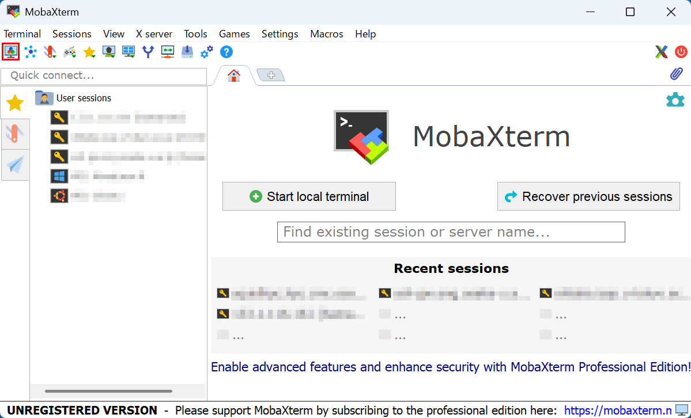
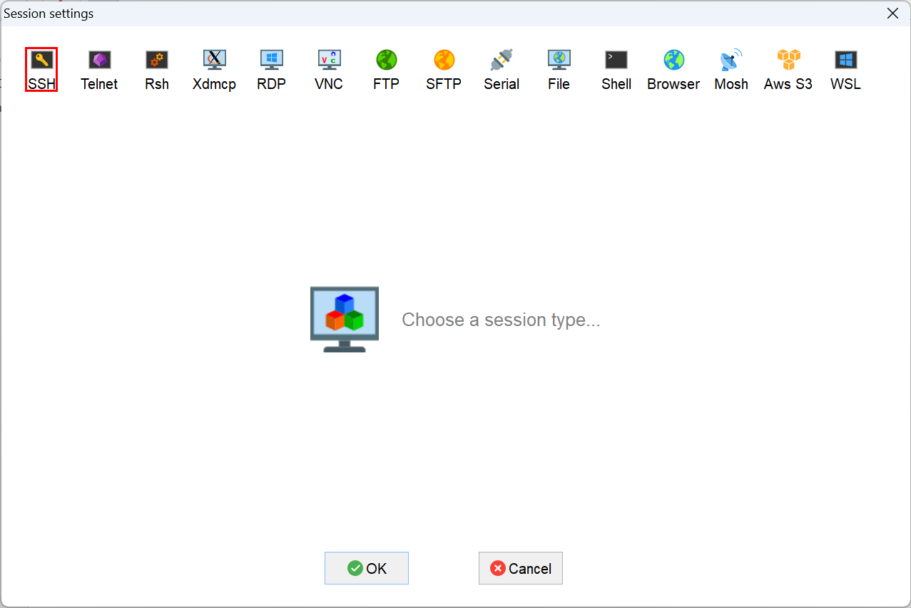
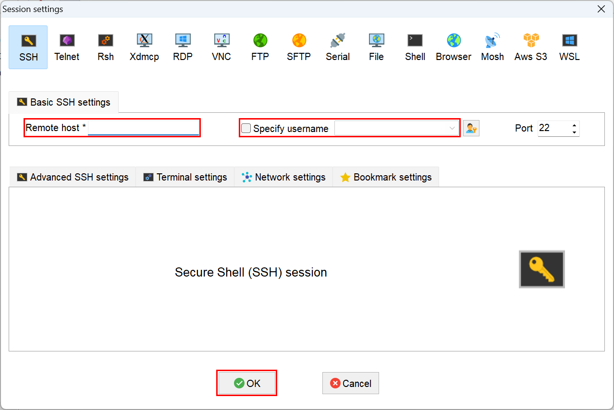
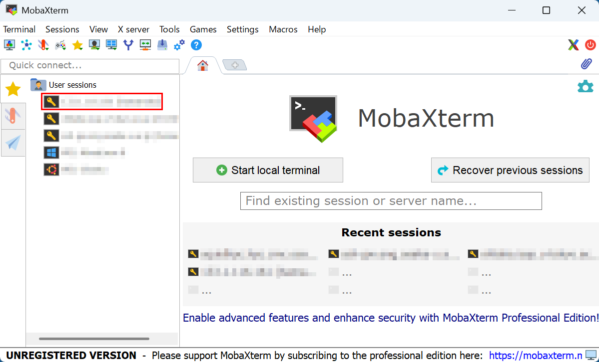

MobaXterm
WindowsでX-Windowが使える端末エミュレータMobaXtermの使い方を説明する。
リモートホストにログイン
左上のNew sessionボタンを押す

左上のSSHボタンを押す

Remote hostにホスト名(SQUIDなら
squidhpc.hpc.cmc.osaka-u.ac.jp)を入力し、Specify usernameにチェックを入れてユーザ名を入力し、下のOKボタンを押す
次回以降は左のUser sessionsから選択してログイン
